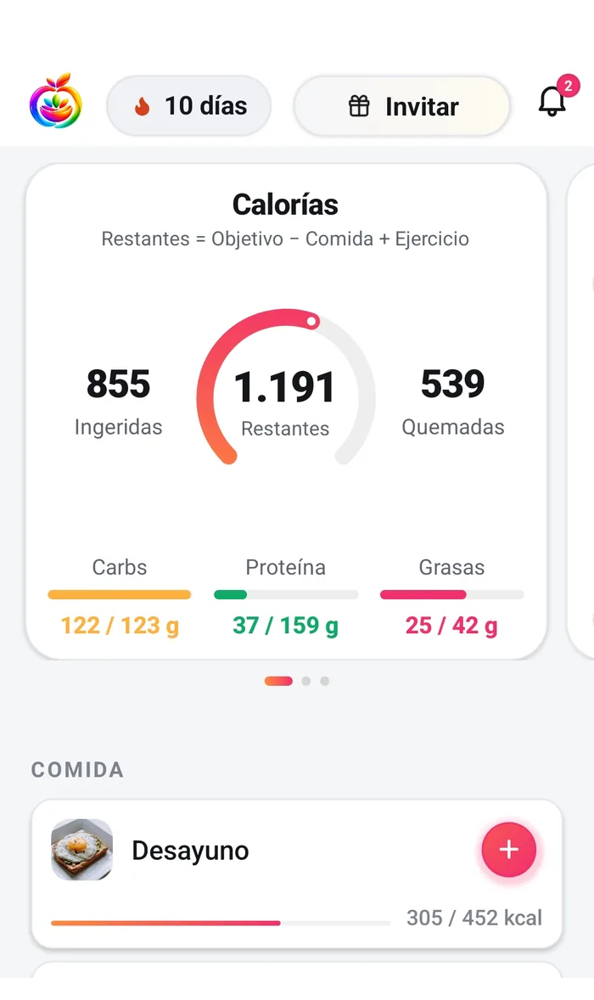
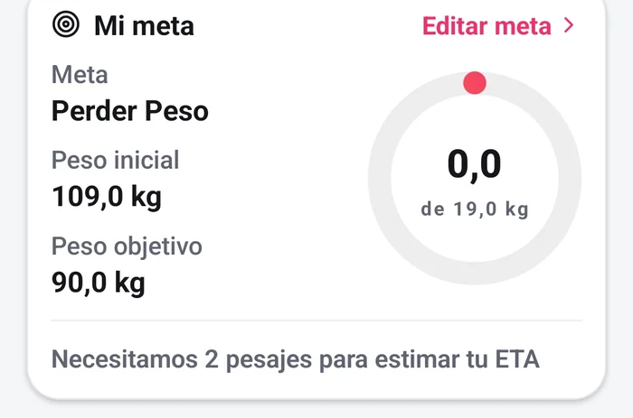
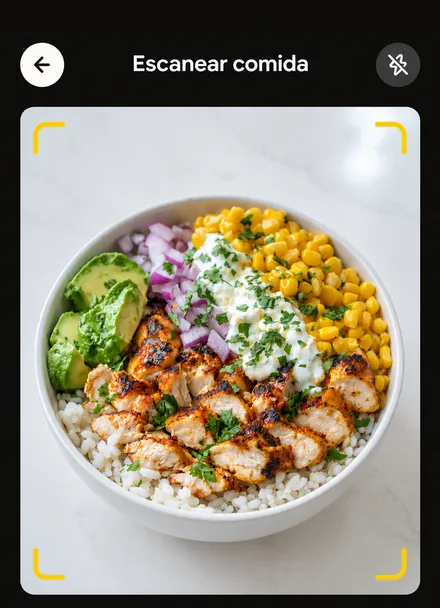
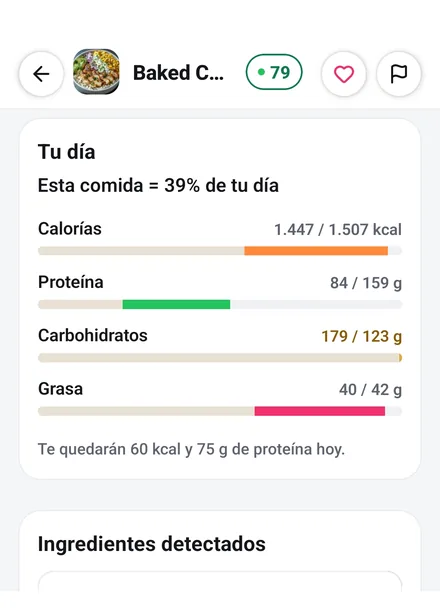
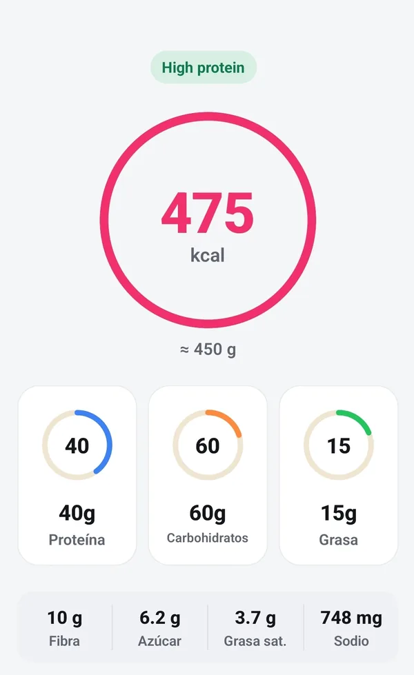
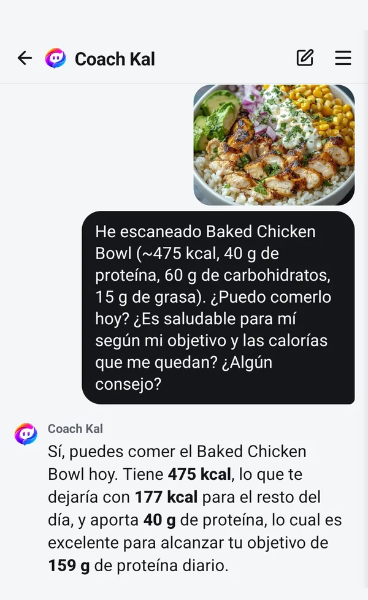

Pierde peso sin convertir la comida en un segundo trabajo.
Perder peso es comer algo menos de lo que gastas, durante el tiempo suficiente para que sume. Esa parte Fotocal no la hace por ti. Lo que hace es que registrar no cueste casi nada — haces una foto, él hace las cuentas — para que el hábito sea uno que puedas mantener.

Cuatro pasos, y ninguno dramático.
Sin dietas milagro y sin alimentos prohibidos. Un bucle que encaja en una vida normal, porque uno que abandonas en la segunda semana no vale nada.
-
Fija la meta, luego el ritmo
Dile a Fotocal tu edad, altura, peso, actividad y objetivo, y te enseña de dónde partes y hacia dónde vas. Luego eliges el ritmo: un cuarto, medio o tres cuartos de kilo por semana, o la cifra que escribas tú. Calcula hacia atrás el objetivo diario de calorías y macros, y no baja de su propio suelo por rápido que le pidas ir.

La tarjeta de la meta, tal cual la enseña la app -
Registra las comidas con una foto
Haz una foto del plato y la IA estima calorías y macros en segundos. Cuando registrar es así de rápido, lo sigues haciendo — y hacerlo es lo que cuenta.

-
Mira el día, no la comida
Tu anillo de calorías te enseña lo que queda del día: el objetivo, menos lo que has comido, más el entrenamiento que hayas registrado. Además cada comida vuelve con una puntuación de salud y una alternativa sugerida, por si quieres tirar por ahí.

-
Lee la tendencia, no la mañana
El peso sube y baja cada día con el agua y la sal, así que un pesaje suelto dice muy poco. Fotocal traza una línea con tus últimos treinta días de pesajes y te dice hacia dónde apunta, también cuando apunta en dirección contraria a tu objetivo.

Lo difícil es el hábito, no las cuentas.
Casi todo el mundo abandona el conteo de calorías en la primera semana; no porque no funcione, sino porque es un rollo. Una foto sustituye a la búsqueda en la base de datos, al pesado y a las suposiciones, así que el hábito sobrevive más allá del tercer día.
- Escaneo con IA por foto para comida casera y de restaurante
- Lector de códigos de barras para productos envasados, gratis y sin tope
- Una puntuación de salud y una alternativa sugerida en cada comida que escaneas
- Los pasos se leen solos con Health Connect y cuentan en tu informe semanal

Alguien a quien preguntar los días difíciles.
Los estancamientos y las comidas fuera son donde esto suele romperse. Coach Kal lee tu propio diario y tu objetivo, así que puede hablar de qué pedir, de por qué la báscula no se mueve o de cómo gastar lo que queda del día — sin culpa y sin normas extremas.
- Coach Kal es gratis en todos los planes, sin límite de mensajes
- Las rachas convierten el registro diario en un hábito
- El informe semanal junta la semana, y también es gratis
- Registra por foto, voz o código de barras — lo que sea más rápido
Un número en la báscula no es un veredicto sobre ti.
Fotocal cuenta cosas. No sabe cómo te ha ido la semana, y no está en posición de juzgarla.
- Las cifras son estimaciones. Una ración leída de una foto y un valor de base de datos arrastran error, y el peso mismo se mueve con el agua, la sal y el sueño.
- Un día que te pasaste es un día que te pasaste. No es un fracaso, y nada en la app está pensado para decirte lo contrario.
- No hay alimentos prohibidos y nada se puntúa como buen o mal comportamiento. La puntuación de salud va del alimento, no de ti.
- Más rápido no es mejor. La app te deja elegir un ritmo más alto porque la decisión es tuya, no porque creamos que deberías.
Fotocal no es un producto sanitario, y esto no es consejo médico
Si estás embarazada, convives con diabetes u otra condición, tomas medicación, eres menor de dieciocho años o tienes cualquier historial de un trastorno de la conducta alimentaria, habla con un médico o con un dietista-nutricionista antes de usar un contador de calorías. Su criterio va por delante. Para algunas personas una app de contar calorías es la herramienta equivocada, y no pasa nada por no usarla.
Preguntas sobre perder peso con Fotocal
¿A qué velocidad voy a perder peso?
No podemos decírtelo, y una app que diga que sí lo está adivinando. Lo que hace Fotocal es dejarte elegir un ritmo semanal, calcular hacia atrás el objetivo diario y enseñarte qué han hecho de verdad tus pesajes en los últimos treinta días. Lo que pase entremedias depende de ti, de tu cuerpo y de muchas cosas que ninguna app ve.
¿Puedo poner mi propio ritmo?
Sí. Hay tres opciones preparadas y además puedes escribir tu propia cifra. Hay un límite: la app no fija un objetivo diario por debajo de su propio suelo, así que si el ritmo que pides te dejaría por debajo, te lo dice y te ofrece el ritmo más rápido que se queda por encima.
¿Mis pasos cambian mi objetivo diario de calorías?
No. El anillo de la pantalla de inicio suma los entrenamientos que registras, no tus pasos. Los pasos se leen con Health Connect y cuentan en tu informe semanal y en tu pestaña de progreso, pero no suben el objetivo del día.
¿Y si dejo de registrar unos días?
No pasa nada. La racha se reinicia y el hueco se ve como un hueco, porque la app solo sabe lo que le has contado. Retomarlo es toda la habilidad, y una semana de parón no es motivo para dejarlo.
Sigue leyendo
Respuestas más largas de las que cabe en una página de función, escritas por personas y no por una app.
Empieza con una foto de tu próxima comida.
Fotocal se empieza gratis, con 5 días de prueba en el plan anual.
Descárgala gratis En Google Play · Android